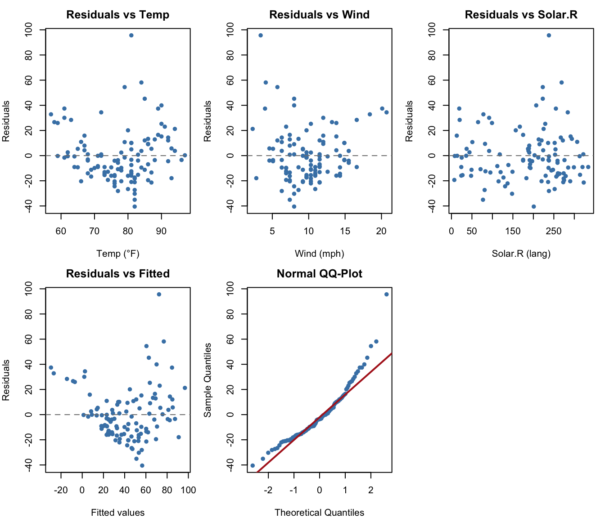
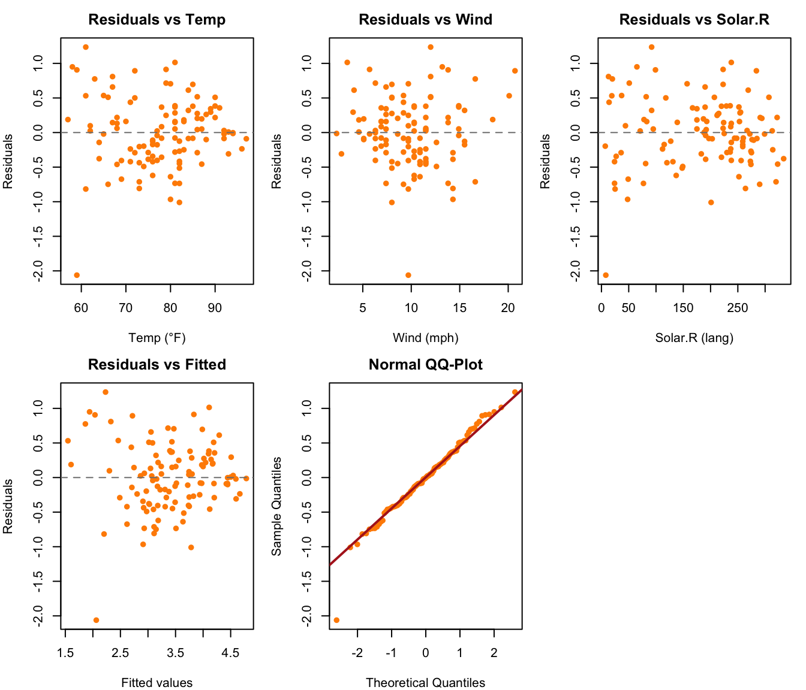

Question 1. Describe the direction (positive or negative) of each relationship between Ozone and the three predictors. Do any of the predictor–response relationships appear nonlinear? Explain briefly.
Ozone vs. Temp: Positive. higher temperatures accompany higher ozone.
Ozone vs. Wind: Negative. higher winds accompany lower ozone
Ozone vs. Solar.R: Positive. more solar radiation accompanies higher ozone.
The Ozone–Temp relationship shows clear curvature (concave-up), suggesting the relationship is not purely linear. The Ozone–Wind plot also shows some curvature and increasing spread at low wind speeds. These patterns suggest a log transformation of Ozone may improve the model.
Part 2: Fitting the Multiple Regression Model
fit <-lm(Ozone ~ Temp + Wind + Solar.R, data = aq)summary(fit)
Call:
lm(formula = Ozone ~ Temp + Wind + Solar.R, data = aq)
Residuals:
Min 1Q Median 3Q Max
-40.485 -14.219 -3.551 10.097 95.619
Coefficients:
Estimate Std. Error t value Pr(>|t|)
(Intercept) -64.34208 23.05472 -2.791 0.00623 **
Temp 1.65209 0.25353 6.516 2.42e-09 ***
Wind -3.33359 0.65441 -5.094 1.52e-06 ***
Solar.R 0.05982 0.02319 2.580 0.01124 *
---
Signif. codes: 0 '***' 0.001 '**' 0.01 '*' 0.05 '.' 0.1 ' ' 1
Residual standard error: 21.18 on 107 degrees of freedom
Multiple R-squared: 0.6059, Adjusted R-squared: 0.5948
F-statistic: 54.83 on 3 and 107 DF, p-value: < 2.2e-16
Question 2. Using the Estimate column from summary(fit), write the fitted regression equation.
Question 3. Interpret each of the three slope coefficients.
Temp (\(\hat{\beta}_1 = 1.652\)): Holding wind speed and solar radiation constant, each additional 1°F increase in temperature is associated with an expected increase of 1.652 ppb in mean ozone.
Wind (\(\hat{\beta}_2 = -3.334\)): Holding temperature and solar radiation constant, each additional 1 mph increase in wind speed is associated with an expected decrease of 3.334 ppb in mean ozone.
Solar.R (\(\hat{\beta}_3 = 0.060\)): Holding temperature and wind speed constant, each additional 1 Langley of solar radiation is associated with an expected increase of 0.060 ppb in mean ozone.
Part 3: Residual Diagnostics
par(mfrow =c(2, 3), mar =c(4, 4, 2.5, 1))plot(aq$Temp, residuals(fit),xlab ="Temp (°F)", ylab ="Residuals",main ="Residuals vs Temp", pch =16, col ="steelblue")abline(h =0, lty =2, col ="gray50")plot(aq$Wind, residuals(fit),xlab ="Wind (mph)", ylab ="Residuals",main ="Residuals vs Wind", pch =16, col ="steelblue")abline(h =0, lty =2, col ="gray50")plot(aq$Solar.R, residuals(fit),xlab ="Solar.R (lang)", ylab ="Residuals",main ="Residuals vs Solar.R", pch =16, col ="steelblue")abline(h =0, lty =2, col ="gray50")plot(fitted(fit), residuals(fit),xlab ="Fitted values", ylab ="Residuals",main ="Residuals vs Fitted", pch =16, col ="steelblue")abline(h =0, lty =2, col ="gray50")qqnorm(residuals(fit), main ="Normal QQ-Plot", pch =16, col ="steelblue")qqline(residuals(fit), col ="firebrick", lwd =2)

Question 4. For each plot, state (i) which assumption it checks and (ii) whether you see evidence of a violation. Then summarize which assumptions appear to be violated.
(a) Residuals vs. Temp: Checks linearity for Temp. There is a slight U-shaped curve. Residuals are negative at low and high temperatures and positive in the middle. This suggests mild nonlinearity.
(b) Residuals vs. Wind: Checks linearity for Wind and equal variance. The spread of residuals is visibly larger at low wind speeds and narrows at high wind speeds. This clear fan shape indicates heteroscedasticity.
(c) Residuals vs. Solar.R: Checks linearity for Solar.R. Points scatter roughly randomly around 0 with no strong pattern. This assumption appears reasonably satisfied.
(d) Residuals vs. Fitted: Checks linearity and equal variance simultaneously. The fan shape is prominent here. Spread increases with fitted values, showing heteroscedasticity.
(e) Normal QQ-Plot: Checks normality. The upper tail deviates well above the reference line, indicating right-skewed residuals with a heavier-than-normal upper tail.
Summary: Two assumptions are clearly violated: equal variance (fan-shaped residuals) and normality (right-skewed residuals). Both are consistent with ozone being a right-skewed, positive-valued variable.
Call:
lm(formula = log(Ozone) ~ Temp + Wind + Solar.R, data = aq)
Residuals:
Min 1Q Median 3Q Max
-2.06193 -0.29970 -0.00231 0.30756 1.23578
Coefficients:
Estimate Std. Error t value Pr(>|t|)
(Intercept) -0.2621323 0.5535669 -0.474 0.636798
Temp 0.0491711 0.0060875 8.077 1.07e-12 ***
Wind -0.0615625 0.0157130 -3.918 0.000158 ***
Solar.R 0.0025152 0.0005567 4.518 1.62e-05 ***
---
Signif. codes: 0 '***' 0.001 '**' 0.01 '*' 0.05 '.' 0.1 ' ' 1
Residual standard error: 0.5086 on 107 degrees of freedom
Multiple R-squared: 0.6644, Adjusted R-squared: 0.655
F-statistic: 70.62 on 3 and 107 DF, p-value: < 2.2e-16
par(mfrow =c(2, 3), mar =c(4, 4, 2.5, 1))plot(aq$Temp, residuals(fit_log),xlab ="Temp (°F)", ylab ="Residuals",main ="Residuals vs Temp", pch =16, col ="darkorange")abline(h =0, lty =2, col ="gray50")plot(aq$Wind, residuals(fit_log),xlab ="Wind (mph)", ylab ="Residuals",main ="Residuals vs Wind", pch =16, col ="darkorange")abline(h =0, lty =2, col ="gray50")plot(aq$Solar.R, residuals(fit_log),xlab ="Solar.R (lang)", ylab ="Residuals",main ="Residuals vs Solar.R", pch =16, col ="darkorange")abline(h =0, lty =2, col ="gray50")plot(fitted(fit_log), residuals(fit_log),xlab ="Fitted values", ylab ="Residuals",main ="Residuals vs Fitted", pch =16, col ="darkorange")abline(h =0, lty =2, col ="gray50")qqnorm(residuals(fit_log), main ="Normal QQ-Plot", pch =16, col ="darkorange")qqline(residuals(fit_log), col ="firebrick", lwd =2)

Question 5. Compare the residual plots from the original model (Part 3) to those from the log-transformed model. Did the log transformation improve the violated assumptions?
Yes. The fan shape in the residuals vs. fitted and vs. Wind plots is largely eliminated. Residual spread is now much more constant, resolving the equal variance violation. The QQ-plot tracks the reference line closely, with the heavy upper tail gone, resolving the normality violation. The residuals vs. Temp plot also shows less curvature. Overall the log model’s assumptions are well satisfied, so we proceed with all formal inference using fit_log.
The anova() output gives one row per predictor plus a Residuals row. To compute the overall \(F^*\), sum the predictor SS to get SSR, read MSE from the Residuals row, then compute MSR = SSR / df\(_\text{Reg}\):
Question 6. Using the \(F^*\) computed above and the critical value \(F_{0.95}(3, 107) \approx 2.69\), state your conclusion from the overall \(F\)-test at \(\alpha = 0.05\).
The calculation above gives \(F^* = \text{MSR}/\text{MSE} = 20.78 / 0.2938 \approx 70.74\). Since \(70.74 \gg 2.69\), we reject \(H_0\) and conclude that at least one of temperature, wind speed, and solar radiation has a statistically significant linear relationship with log ozone concentration.
Question 7. Report \(R^2\) from summary(fit_log) and interpret it. Then explain why it cannot be directly compared to the \(R^2\) from fit.
\(R^2 \approx 0.664\): about 66.4% of the total variation in log(Ozone) is explained by the three predictors. This cannot be compared to the \(R^2 \approx 0.606\) from fit because \(R^2\) measures the proportion of variance explained in the response variable — when the response changes from Ozone to log(Ozone), SSTO is computed on a different scale, so the two values are measuring explanatory power for different quantities.
Question 8. Interpret the 95% CI for \(\beta_1\) (Temp). Does the 95% CI for Solar.R include zero, and what does that tell you?
We are 95% confident that the true partial effect of temperature on log(Ozone) — holding wind and solar radiation constant — lies between approximately 0.033 and 0.056 log-ppb per °F, corresponding to a 3.4%–5.8% multiplicative increase in ozone per degree. The 95% CI for Solar.R runs from approximately 0.00027 to 0.00263 and does not include zero, confirming that solar radiation has a statistically significant positive effect on ozone even after controlling for the other predictors.
Question 9. Using exp(coef(fit_log)), complete the sentence about the exponentiated Temp coefficient.
“Holding wind speed and solar radiation constant, each 1°F increase in temperature is associated with ozone levels being multiplied by a factor of approximately 1.046 (i.e., a ~4.6% increase), on average.” This comes from exponentiating the log-scale coefficient: \(e^{0.0448} \approx 1.046\).
Question 10. Report the back-transformed point prediction. What does this value represent?
The model predicts \(\widehat{\log(\text{Ozone})} \approx 3.43\), which back-transforms to \(e^{3.43} \approx\)30.9 ppb. This is the model’s best estimate of the mean ozone concentration on days with temperature 80°F, wind speed 10 mph, and solar radiation 200 Langleys.
Question 11. Interpret the back-transformed confidence interval and prediction interval in context. How do they differ, and why is the prediction interval wider?
The 95% confidence interval (approximately 26–37 ppb) describes where the mean ozone concentration lies across all days with these conditions — it captures uncertainty in estimating the population mean. The 95% prediction interval (approximately 11–90 ppb) describes where the ozone concentration on a single new day with these conditions will fall — it must also account for the natural day-to-day variability around the mean, which is why it is substantially wider.